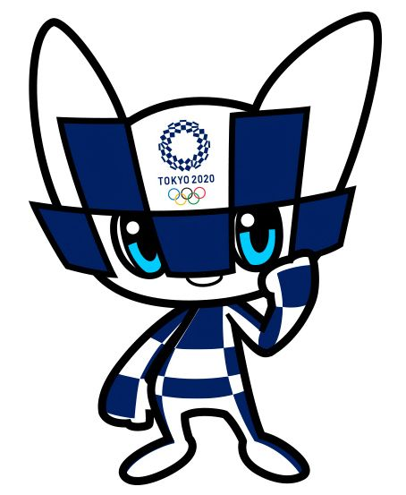
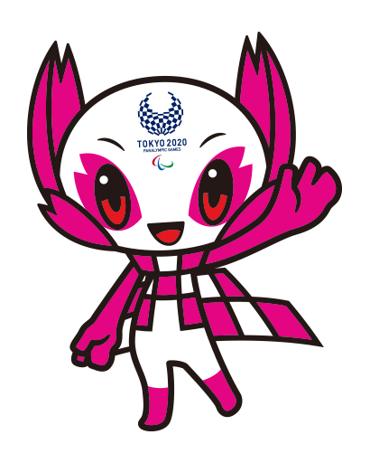

A mascote das Olimpíadas de Tóquio também segue a cartela de cores e formas do emblema e foi nomeada de Miraitowa, nome formado pelas palavras japonesas Mirai (futuro) e Towa (eternidade), que representa o desejo de um futuro cheio de esperança nos corações de todas as pessoas do mundo.
Já a mascote das Paralimpíadas de Tóquio é Someity, criatura inspirada nas tradicionais flores de cerejeira do Japão e que tem um incrível poder mental e força física, simbolizando a superação de obstáculos dos paratletas. Seu nome é baseado na junção de Someiyoshino (espécie de flor de cerejeira) com o termo “so might”
